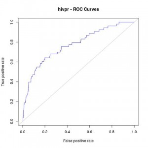
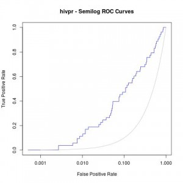

Original entry published in CBDD Research Group Blog.
Here you will find a a short tutorial about how to generate ROC curves and other statistics after running rDock molecular docking (for other programs such as Vina or Glide, just a little modification on the way dataforR_uq.txt file is interpreted will make it work, see below).
I assume all of you are familiar with what ROC curves are, what are they for and how they are made.
Just in case, a very brief summary would be:
- ROC curves are graphic representations of the relation existing between the sensibility and the specificity of a test. It is generated by plotting the fraction of true positives out of the total actual positives versus the fraction of false positives out of the total actual negatives.
- In our case, we will use it for checking whether a docking program is able to select active ligands with respect to inactive ligands (decoys) and whether it is able to select these active ligands in the top % of a ranked database.
- R Library ROCR is mandatory (try with command
install.packages("ROCR")in R before downloading from source).
The example selected for this tutorial is a system from the DUD benchmark set, “hivpr” or “hiv protease”.
These are the files you will need (all can be downloaded in this Dropbox shared folder):
- List of active ligands (ligands.txt).
- List of inactive ligands (decoys.txt).
- Output file with the docked poses of each ligand with the corresponding docking scores (hivpr_all_results.sd.gz).
- R script with all the R commands in this tutorial (ROC_curves.R).
Before getting into R, the resulted docked poses have to be filtered out for only having the best pose for each ligand (the smallest score – or highest in negative value). To do so run:
NOTE: sdsort and sdreport are really useful tools for managing sd formatted compound collections. They are very user-friendly and free to download. They are provided along with rDock software in rDock website. Go to Download section for downloading rDock.
gunzip hivpr_all_results.sd.gz
sdsort -n -s -fSCORE hivpr_all_results.sd | sdfilter -f'$_COUNT == 1' > hivpr_1poseperlig.sd
#sdsort with -n and -s flags will sort internally each ligand by increasing score and sdfilter will get only the first entry of each ligand.
sdreport -t hivpr_1poseperlig.sd | awk '{print $2,$3,$4,$5,$6,$7}' > dataforR_uq.txt
#sdreport will print all the scores of the output in a tabular format and, with command awk, we will format the results
This dataforR_uq.txt (also in Dropbox folder) file must contain one entry per ligand with the docked scores (what R will use to rank and plot the ROC curves).
R Commands for generating ROC Curves
Then, run the following commands in R for plotting the ROC curves:
#load ROCR library(ROCR); #load ligands and decoys lig
Which will give us the following plot:

{kind=link}
#AUC (area under the curve) auc_rdock
AUC: 0.7700965
#Enrichment Factors
EF_rdock 0.01)[1]]
EF_rdock_20 0.2)[1]]
cat("Enrichment Factor top1%:\n")
cat(EF_rdock_1)
cat("\n\n")
Enrichment Factor top1%: 11.11817
cat("Enrichment Factor top20%:\n")
cat(EF_rdock_20)
cat("\n\n")
Enrichment Factor top20%: 3.200686
Moreover, a good analysis of these curves is to re-plot them in semilogarithmic scale (x axis in logarithmic scale). This way, one can focus on the early enrichment of the database and have a more detailed view of the selected actives in the top % of all the ligands.
jpeg("hivpr_semilog_ROC.jpg")
rdockforsemilog=perfINTERuq@x.values[[1]]
rdockforsemilog[rdockforsemilog < 0.0005]=0.0005
plot(rdockforsemilog,perfINTERuq@y.values[[1]],type="l",xlab="False Positive Rate", ylab="True Positive Rate",xaxt="n", log="x", col="blue",main="hivpr - Semilog ROC Curves")
axis(1, c(0,0.001,0.01,0.1,1))
x<-seq(0,1,0.001)
points(x,x,col="gray",type="l")
dev.off()
Obtaining the following semi-logarithmic ROC curves:

{kind=link}